15th to 17th October
Note that for privacy reasons the names in this article have been changed.
This time I'm writing to you about my time in East Nusa Tenggara. When I told my Dad I was planning some time in Indonesia his only advice was to make sure I saw the Komodo Dragons, something he ran out of time to do on his trip when he was younger. So heeding his advice I booked my first 2 nights in the coastal town of Labuan Bajo, a stones throw from Komodo National Park. Take note that if you'd like to see these animals and don't want to fly halfway around the world for them there are in fact 2 of them in Colchester Zoo (something I learnt from a local here).
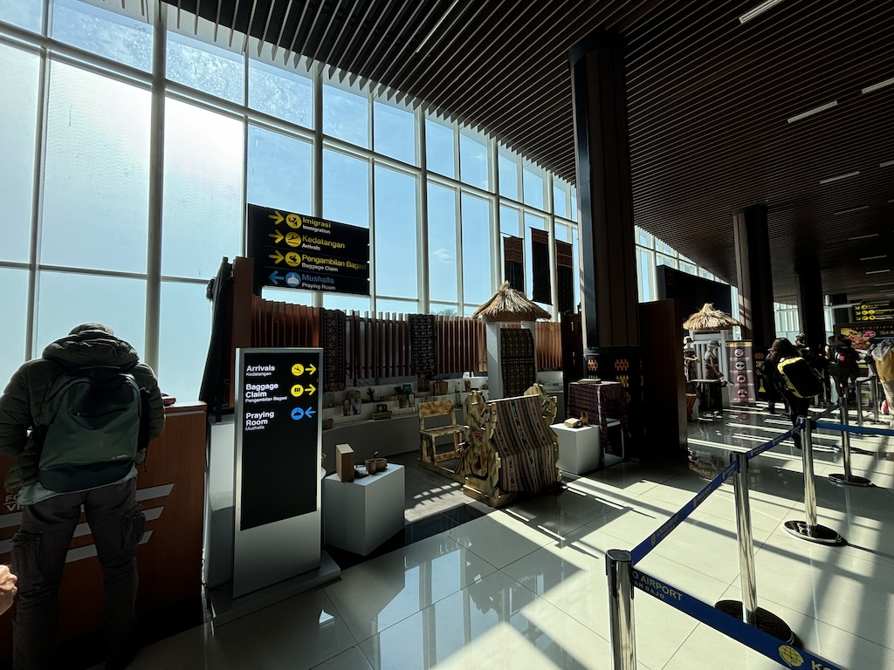One thing I've learnt from this whole trip is how much easier it is to go through customs upon first entry at a smaller airport. Stewart International for the USA and now Labuan Bajo for Indonesia; the smaller crowds and the more relaxed staff seems to make the whole process of getting a tourism visa on arrival both fast and easy. I left the airport and immediately was confronted with 20 offers for a taxi. Knowing my hostel was only 25 minutes walk away I opted to walk it - I didn't have any cash at that point anyway. The walk showed me my first impressions of rural Indonesia. Tattered and rundown buildings lined the road. A bunch of kids were happily playing next to the road, completely content with bare and very dirty feet. In the distance I could new hotels and villas being built. It did not feel dangerous but was clearly leaps and bounds behind the highly developed Japanese capital city I just came from.
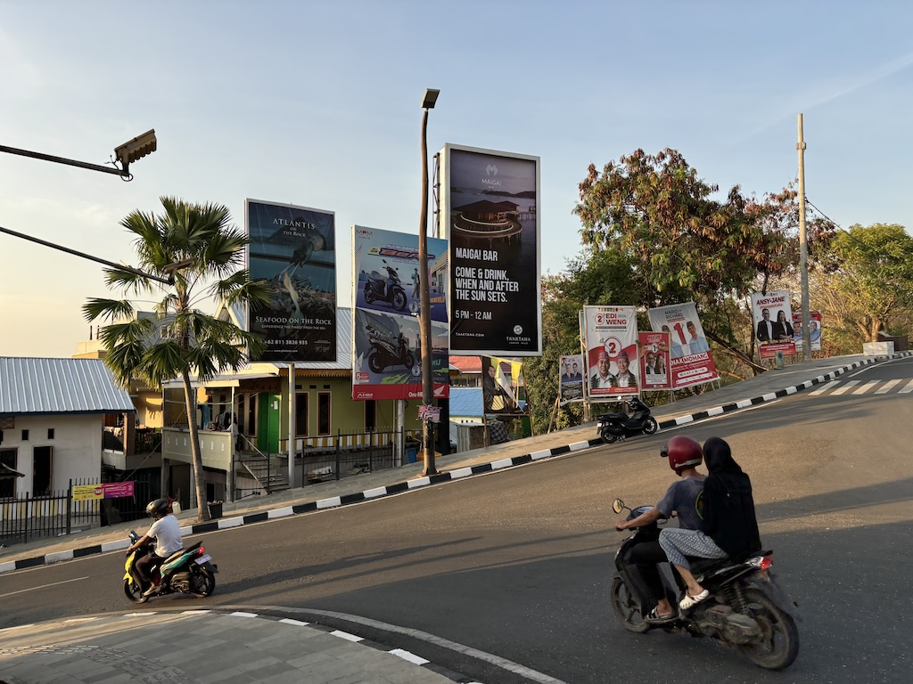I checked into my hostel which was both the cheapest and nicest place I've stayed so far. After dropping off the bags and a quick shower I walked around town, got some cash and headed to a restaurant on the hill to take in the view of the bay. The sunset was stunning; This night time photo does not do it justice.
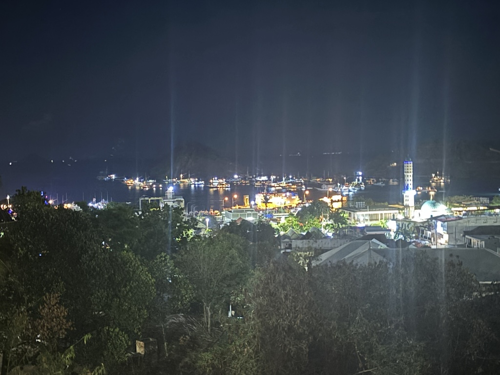The next day I'm up bright and early to get my 06:00 taxi to the waterfront. After paying our entrance fee for Komodo park in the port (375000 rupiah, about £18) we board our boat for the day. Our boat, named Ocean Queen, was a small motorboat powered by 2 large and quite loud yamaha motors.
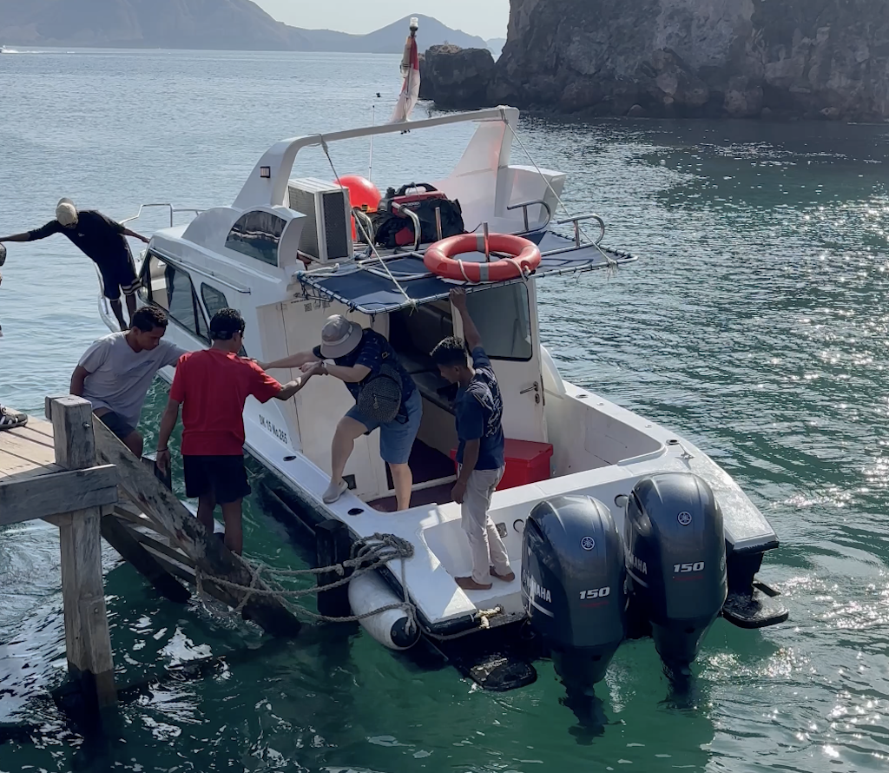The boat was exactly big enough for everyone who had booked onto the day trip leaving very little space inside the boat. At top speed it was too wet to sit out the back leaving us to huddle inside it as it darted across the water to each stop. I did not mind this at all enjoying the novelty of being on a boat between so many islands - except for the stench of fuel. The entire time we were inside the boat it stank of petrol which definitely affected a very friendly Singaporian couple I got chatting to throughout the day.
As we headed to our first destination of the day I saw a lot of similarly small vessels all over the water. Some similar to ours, bigger or faster variants flew past us a couple of times on this first leg of the day. I took this photo of this older looking boat. There were quite a few of these small wooden ships that were designed to be lived on full time. Touring the islands from Bali to Nusa Tenggara on multiple day voyages seems very popular.
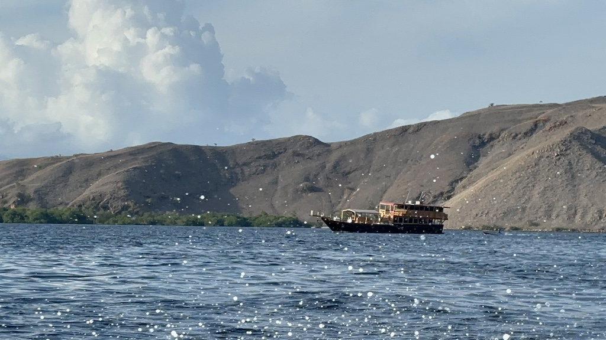Padar Island was our first stop. A short hike to the top (account for stops due to the heat I'd say it took about 40 minutes?) with a very cool view of the island. However there is literally nothing else here and as you can see there are lots of other people all doing the same short hike. I enjoyed the view but it did feel like little more than a spot to take a social media worthy photo. You can see people waiting for the best angle in the photo below.
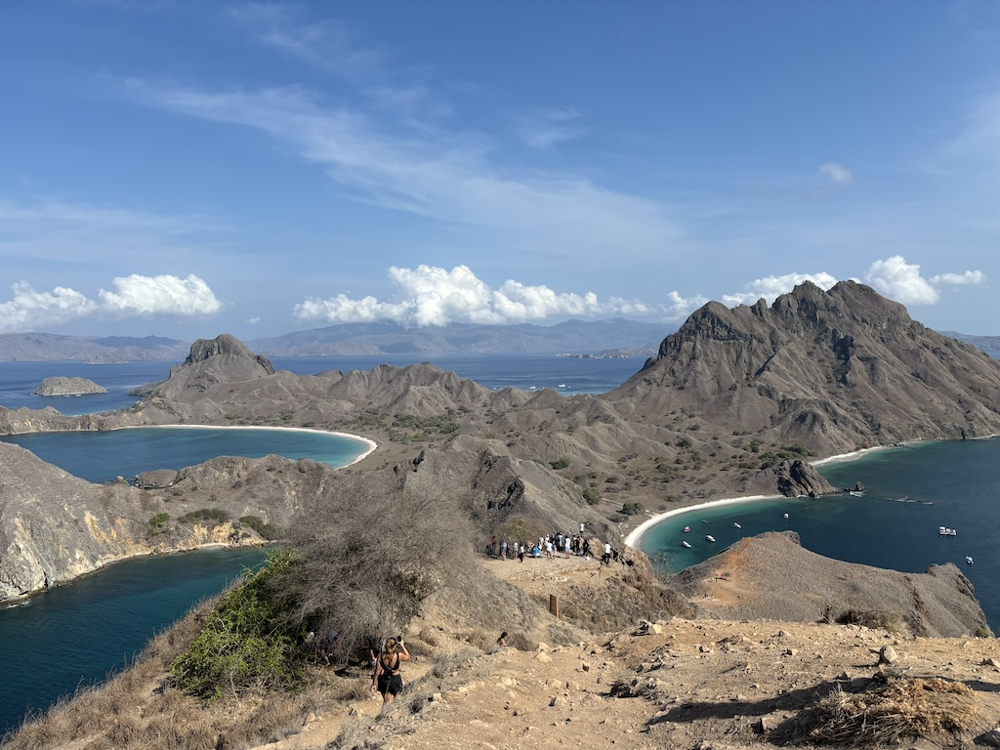Next we visited Pink Beach, which was genuinely very pink! We had about an hour to relax here so I went for a short swim, played with the pink sand for a bit and then had a coconut with the Singaporian couple. It turns out they currently live in the UK but work high flying international jobs. Flying out to Indonesia was just part of their annual trip back to Singapore. They were very friendly and lovely to chat to but I'd hate to see the carbon footprint their air miles per year would produce.
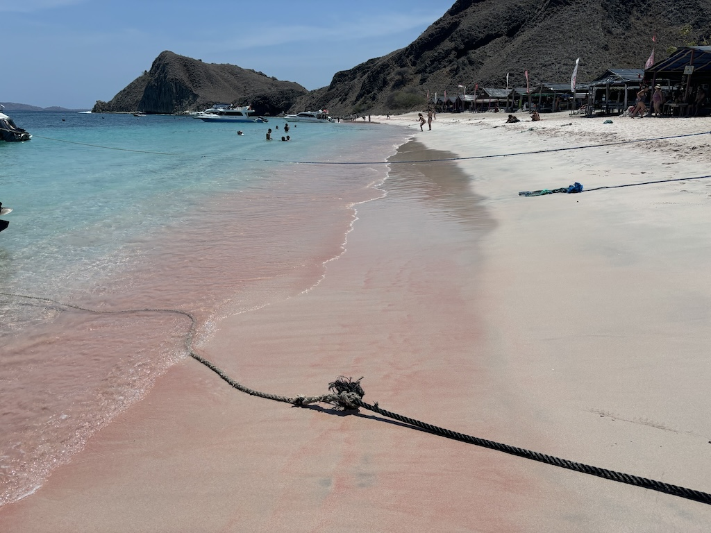Our next stop was exactly what I had been waiting for - Komodo National Park. The park is an entire island situated between East and West Nusa Tenggara. It's due to the isolation of the island that the Komodo Dragon evolved to be so big and dominant. Below is a photo of the entrance to the park from what I think is the only jetty attached to the island. Some men selling souvenirs, a very basic toilet and a visitors center comprised of wooden propped up boards with information on the dragons was the content of this entrance area.
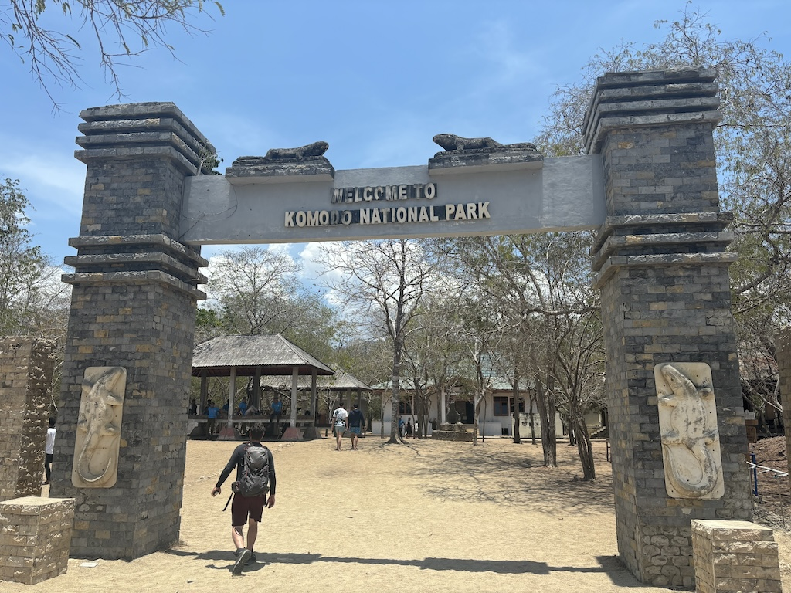I'd like to first acknowledge the bad parts of visiting Komodo National Park. Unlike any other national park I have visited before which had many trails and viewpoints for you to explore, this park only had 3. These 3 trails are essentially one short loop with 2 small extensions. The park fee you pay mostly goes to guides that (I think) are required to take every group around. They also only seem interested on walking the shortest loop, despite the request of our entire group to go a bit further, I suspect to get the tour finished as fast as possible. Note that if you go here, you will only get to see a tiny corner of the whole island and will have to walk a trail with lots of other people around. When I asked at the end if I could re-enter the park to walk a different trail I was told not to. For each Komodo Dragon we saw we were only allowed a minute or two to actually appreciate them. The guides did give good information about the animals, just not enough time to see them. At least that's my opinion.
Now the negative points are aside I'd like to point out that despite this very short walk we did get to see 5 different Komodo Dragons! The one pictured below was the largest we saw by far. It being the middle of the day it was far too hot for this 40 year old male to do anything but sit in the sun which meant we could go right up to it with little risk of it attacking. Their skin is incredibly scaly and their tails are as long as the rest of their bodies. I did find it odd how their arms seem to contort in strange ways when they lie down. Nonetheless it was probably the most impressive predator I've seen with my own eyes. The tour had it's flaws but the trip out to the park was worth it just for those few moments with these beasts.
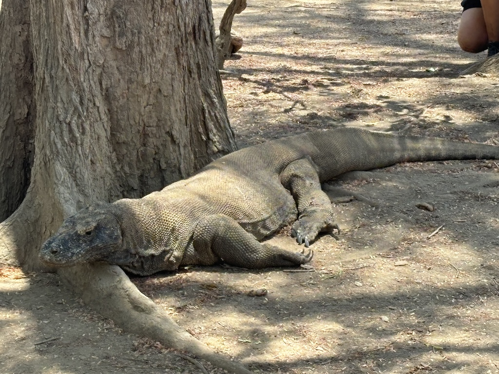The final stop of the day was to do some snorkeling. Having seen 5 Komodo Dragons I considered any extra wildlife I got to see as bonus. This spot pictured below had a large coral reef to the right. Without any good underwater camera equipment this is the only photo I have from this spot. The sunburn I got from snorkeling a full hour here was worth it. Our guide and I spotted all sorts of coloured fish (admittedly none of which I knew the name of) and even a reef shark!
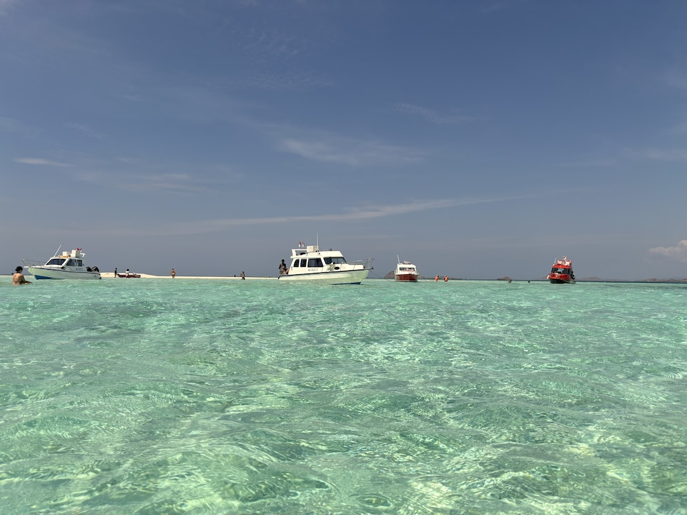A couple of tour boats moved about a kilometer down the coastline from this spot so our tour guide took us with them. There we spotted multiple green turtles and even more fish, eel and coral. If the crowds were a little smaller this would have been a flawless experience. I don't mind swimming with other people around but all these tour boats and humans were definitely disturbing the wildlife. At one point a turtle swam up to the surface for air. Like paparazzi's chasing a celebrity at least 10 people all rushed over to swim right next to it, taking photos with it, enclosing it tightly and occasionally knocking the turtle about as it swam. Poor fella.
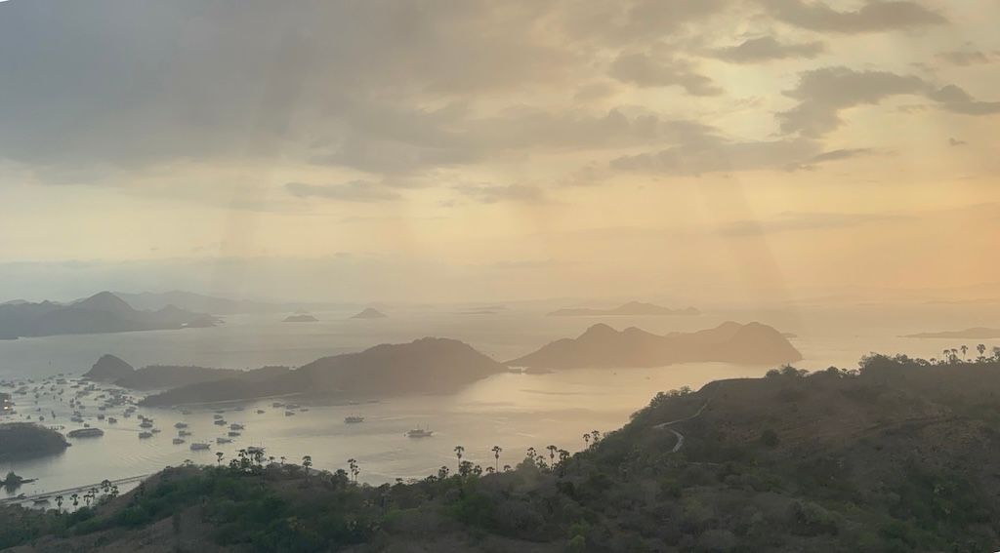And with that we headed back to Labuan Bajo, I ate some dinner at the hostel and the next day I flew out. Although there were lots more things to do here (I learnt later there was a beautiful swimmable cave just up the coastline) I was happy visiting for my 1 full day.
I want to finish this one off with a story about a member of staff I met at the hostel. His name was Angus and after chatting with him on the first night a bit about Football I asked him about life living here. Staff at these sorts of hotels don't seem to share that much with the guests and I suspect it's because it's not very pleasing to hear. Even though Angus is very interested in football I learnt that in this remote part of Indonesia there are no organised sports at all. There aren't even any flat (let alone grassy) spaces to play sports here; Instead it seems that everything that has been built has been to serve the new tourism industry. Shops are stocked with tourist goods like poor quality inflatable beach balls but getting a football to kick about or a jersey to wear is very difficult. Angus tells me he's never left this island to go anywhere else - not even across the bay to see the Komodo Dragons. He tells me it's too expensive (note that my luxury day trip to 5 different locations was only £70), meaning he probably has to spend almost all his money he makes on his living costs. Nonetheless, he seems genuinely very happy with his situation. Having a job at this hostel resort makes him happy and he seems very glad people are visiting from abroad to see the islands. I suspect before Labuan Bajo had it's airport, hotels and boat tours there was no other industry here at all. I'm confident he is underpaid for his work (which is partially why the prices are so low I suspect), but it seems here the alternative to refusing a terrible pay is to be jobless and therefore completely economically left behind.
I subtly tipped Angus a healthy amount on my last night. I was glad to see him pocket it quickly, hopefully indicating he gets to keep it all and not cut half with his boss, or worse, get none of it at all. I wish you all the best Angus and I hope one day you get to see those Komodo Dragons too.
Navigate home